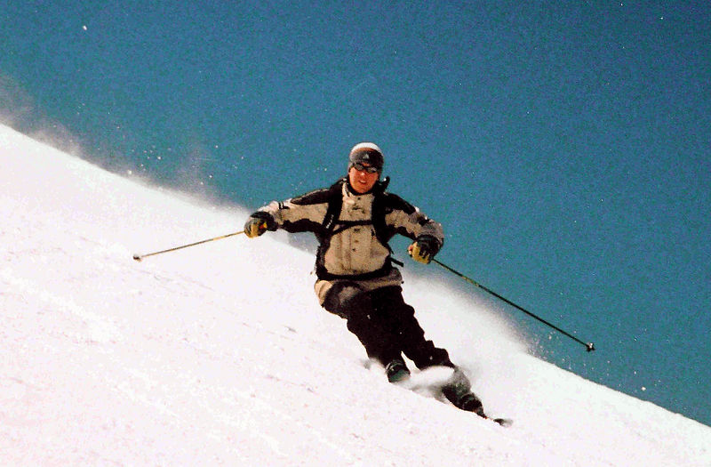

Skiing is a mode of transport, recreational activity and competitive winter sport in which the participant uses skis to glide on snow. Many types of competitive skiing events are recognized by the International Olympic Committee (IOC), and the International Ski Federation (FIS).
Also called downhill skiing, alpine skiing typically takes place on a piste at a ski resort. It is characterized by fixed-heel bindings that attach at both the toe and the heel of the skier's boot. Because alpine equipment is somewhat difficult to walk in, ski lifts, including chairlifts, bring skiers up the slope. Backcountry skiing can be accessed by helicopter, snowcat, hiking and snowmobile. Facilities at resorts can include night skiing, après-ski, and glade skiing under the supervision of the ski patrol and the ski school. Alpine skiing branched off from the older Nordic skiing around the 1920s, when the advent of ski lifts meant that it was not necessary to walk any longer. Alpine equipment specialized to where it can only be used with the help of lifts.
